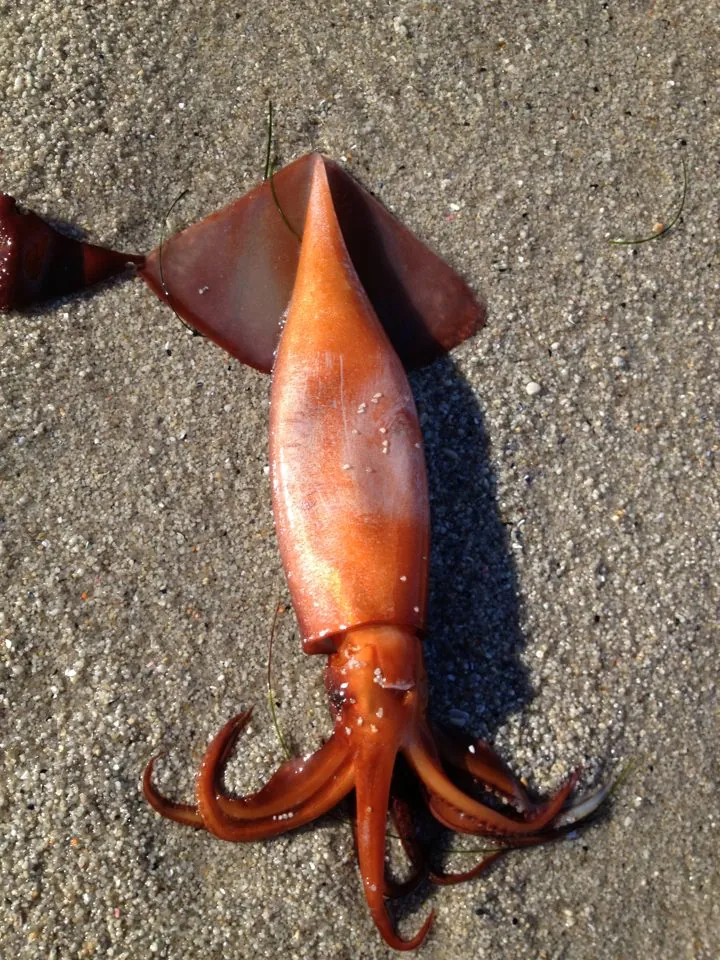

软体动物 · 动物界
茎柔鱼 Dosidicus gigas

胴长可达一米余的大型柔鱼，体色赤红，夜间上浮至表层捕食，是东太平洋最重要的头足类渔业资源之一。
- 分类
- 门软体动物门纲头足纲目枪形目科柔鱼科属茎柔鱼属
- 栖息环境
- 东太平洋表层至水深数百米的水层，昼夜作垂直洄游
- 地理分布
- 东太平洋，自加利福尼亚南部至智利中部的热带与温带海域
- 保护级别
- 尚无保护级别；资源量受厄尔尼诺等气候事件影响波动大
物种志
茎柔鱼的胴长通常六十至八十厘米，最大可达一点二米，体重可超过四十千克，是柔鱼科中体型最大的种类之一。它的胴体呈圆锥形，鳍宽大，呈三角形，占胴长的三分之一以上。体色在活着时呈赤红至砖红色，皮肤上密布细小的红色斑点，能迅速变色，死后多转为灰白。腕足粗壮，吸盘上长有尖锐的角质齿环。
它分布于东太平洋，从加利福尼亚南部到智利中部的热带和温带海域，栖息在表层至水深数百米的水层，白天潜入深水，夜间上浮至表层捕食，作明显的垂直洄游。它以小鱼、甲壳类和其他头足类为食，生长快、寿命约一至两年，繁殖后死亡。它是东太平洋最重要的头足类渔业资源之一，秘鲁、墨西哥和智利等国大量捕捞，中国远洋船队也参与作业。目前尚无保护级别，但资源量受厄尔尼诺等气候事件影响波动很大。
形态与习性
- 胴长通常六十至八十厘米，最大可达一点二米
- 体重最大可超过四十千克
- 体色活体赤红至砖红，能迅速变色
- 栖息水层表层至水深数百米，昼夜垂直洄游
- 食性捕食小鱼、甲壳类和其他头足类
- 寿命约一至两年，繁殖后死亡
趣味知识
- 它活着时全身赤红，是海里最醒目的大鱿鱼之一。
- 白天它躲在几百米深处，天黑了才成群浮上来捕食。
- 它的吸盘上长着角质齿环，抓住猎物就很难挣脱。